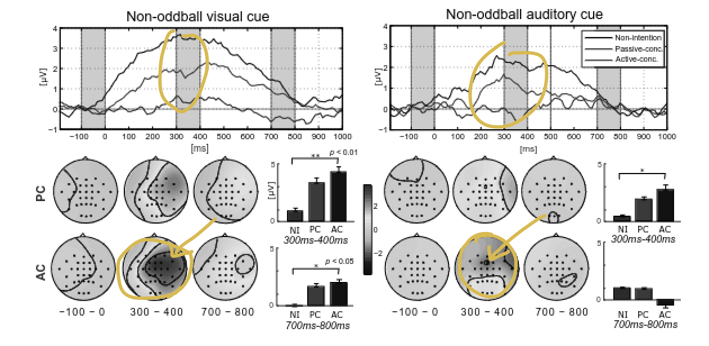

my skills & programming languages
Machine Learning
2 year experience
Motion detection and person recognition with dlib package for reducing memory and CPU usage. Develop whole pipeline of project: from motion detection to sending JSON Face Recognition Data to server.
Keywords: Computer Vision, Machine Learning, Pipeline
Programming L. and Frameworks: Python, Golang, C/C++, JSON, Git, Database(SQLite), dlib, OpenCV
Microservices & Backend
2 year experience
Develop server side and API with connecting database. Created microservices for sending and receiving data from server and ML results.
Keywords: Pipeline, backend, microservices, team work
Programming L. and Frameworks: Python, Golang, C/C++, JSON, Git, Database(SQLite)
UX/IU & Front
3 year experience
Design website and application, both desktop and mobile versions.
Conducted UX experiments and wrote reports.
Make animated banners and advertisements, worked with social media (target).
Work as Senior-Lecturer at university (Web-Technologies). My course covers all aspects of UX/UI, Front and Backend with Database.
Keywords: Figma, Adobe Photoshop, After Effects, Adobe XD,
Programming L. and Frameworks: Python, Golang, C/C++, JSON, Git, Database(SQLite)
Research
2 year experience
Worked in labarotory under supervision of Dr. Min-Ho Lee on Brain-Computer Interaction. Published two scientific papers and successfully presented at ICONIP conference.
Keywords: BCI, ML, Experiments, Papers, Labaratory
Programming L. and Frameworks: Python, Matlab, numpy, Scikit, pandas, Tensorflow
projects
soon...
my publications

A Novel Binary BCI Systems Based on Non-oddball Auditory and Visual Paradigms
Event-Related Potentials (ERPs) based binary BCI systems help enable users to control external devices through brain signals responding to stimulus. However, the external properties of the auditory or visual stimuli in the typical oddball-paradigm are loud and large for a user, which often brings psychological discomfort. In this study, we proposed novel non-oddball BCI paradigms where the intensity of external properties is greatly minimized while maintaining the system performance. To compensate for the loss of accuracy from the diminutive stimulus, users were instructed to generate discriminant ERP responses by performing a voluntary mental task. As the result, task-relevant endogenous components were investigated by the certain mental task and greatly enhanced system performance. The decoding accuracies of proposed CNN with data augmentation technique were 77.8% and 76.7% for the non-oddball visual and auditory paradigms, respectively, which significantly outperformed the linear classifier model. These results open up novel avenues for practical ERP systems, which could increase the usability of current brain-computer interfaces remarkably.